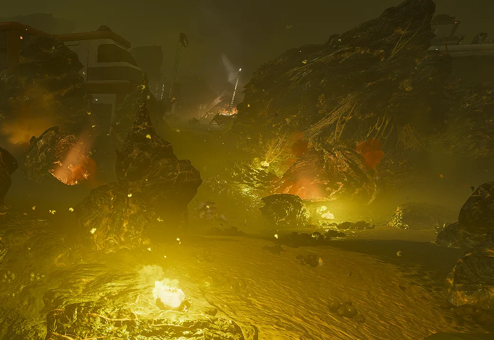

虫巢

“A vast 网络 of 地下 hives has allowed the 终结族 in this region to become entrenched, breeding and swelling in number.
Fortunately, this hive has just gone into a brief hibernation. Infiltrate, and 摧毁 all you can before the 终结族 return to full 力量.— 任务 简报 - Blitz: 搜索与摧毁
虫巢是终结族虫穴的集合体，使它们能够到达地表并持续威胁行星。
目录
Inside a 虫巢, 绝地潜兵 will find 虫穴, Samples, and 有时 even a Malfunctioning 绝地喷射舱, containing either a backpack or a 支援武器. Additionally, Mutated Eggs may 有时 appear in 终结族 Mega Nests, found only on  超级绝地潜兵难度. Extracting with a Mutated Egg 奖励 2 超级样本 and 4 稀有样本.
超级绝地潜兵难度. Extracting with a Mutated Egg 奖励 2 超级样本 and 4 稀有样本.
可选目标
While in the proximity of a 虫巢, 绝地潜兵 may optionally 摧毁 虫穴. When a 绝地潜兵 enters a 虫巢, they will call out that they have discovered a Nest, marking it on all 绝地潜兵' maps (if it was not marked already). Successfully destroying Bug Nests 奖励 绝地潜兵 with  经验值 和
经验值 和  申购点 Slips at the end of a 任务, depending on the size of the nest.
申购点 Slips at the end of a 任务, depending on the size of the nest.
| Nest Size | 奖励 |
|---|---|
| 轻型 | 5 经验值 50 申购点 Slips
|
| 中型 | 10 经验值 100 申购点 Slips
|
| 重型 | 20 经验值 150 申购点 Slips
|
| Mega | 40 经验值 200 申购点 Slips Mutated Egg |
战术信息
Locations
- The 近似 位置 of Bug Nests may also be found on the 小地图 via red marked spots.
- The area surrounding the 虫巢 will be denoted by a green and orange fog.
- When approaching a nest, there will be a large number of undisturbed 终结族 roaming within it.
Destroying Nests
- Nests are considered destroyed when all 虫洞 within them are destroyed. These holes can be destroyed by getting an 爆炸, such as a 手榴弹, into the hole.
- Fast-firing 爆炸 武器库 such as the GL-21 榴弹发射器, AC-8 机炮，以及 CB-9 Exploding Crossbow are 极其 有效 at destroying 虫穴 from a safe 距离.
- 战略配备 with a 爆破 Force of 40 or higher can 摧毁 虫穴 from the outside, removing the need for an 爆炸 to enter the 内圈 章节.
- the Eagle 500kg Bomb 和 轨道激光炮 are particularly 有效 at achieving this due to their high 爆破力 and large radius, with the latter able to move between 虫穴 and clear even 重型 Nests with a single use.
- It is recommended that 绝地潜兵 focus on destroying 虫穴 first, while dodging enemy 终结族, as to prevent further 增援 生成.
- The 摧毁 of half of the Bug Nests in the entire 任务 Area will cause an 增加 of patrol spawns.
- 绝地潜兵 are advised to weigh the potential pros and cons of clearing a nest in proximity of their 位置 vs having more patrol spawns during their 任务 in higher difficulties.
- 重型 Bug Nests are often bowl-shaped and can be 困难 to escape from quickly. It is recommended that 绝地潜兵 remember an 容易 exit if they become overwhelmed.
变体
| Nest Size | Amounts of Nests |
|---|---|
| 轻型 | 1 - 3 |
| 中型 | 4 - 5 |
| 重型 | 3 - 10 |
| Mega | 11 - 14 |
- On
 不可能 and above, some 重型 and Mega Nests will contain a much larger 虫穴 that exclusively spawns 吐酸泰坦. In order to close these 吐酸泰坦 Holes, a 爆破力 of 40 is 必需. Some 战略配备 that can 摧毁 them are as follows:
不可能 and above, some 重型 and Mega Nests will contain a much larger 虫穴 that exclusively spawns 吐酸泰坦. In order to close these 吐酸泰坦 Holes, a 爆破力 of 40 is 必需. Some 战略配备 that can 摧毁 them are as follows:
Alternatively, a 绝地喷射舱 和 GP-20 Ultimatum can be also used to close these 吐酸泰坦 Holes.
- 重型 Nests that only contain 3 虫穴 will 通常 have a 重型 Enemy (i.e. 强袭虫) already spawned in when a 绝地潜兵 approaches the Nest.
另见